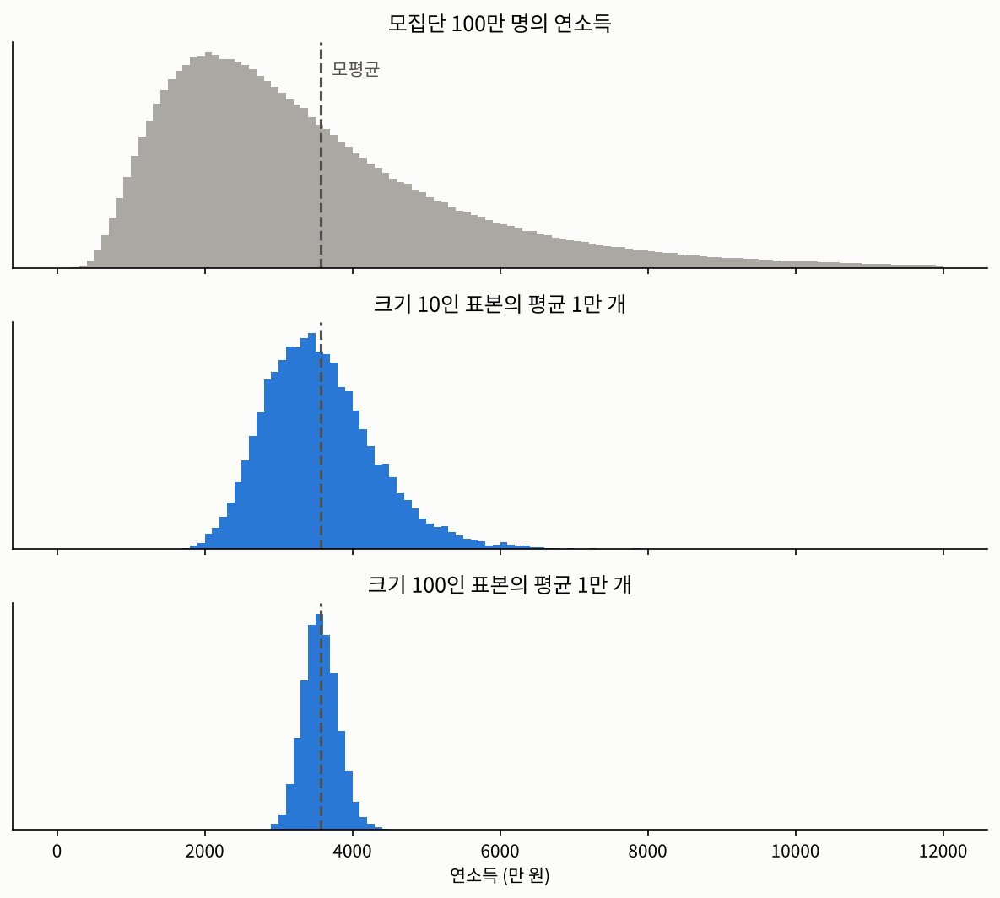

4.1 점 추정과 표집 분포
4장 추론 통계와 통계적 검정 · 표본 하나로 모집단을 짐작하기
들어가며
4장 소개 글에서 추론 통계의 두 기둥이 추정과 검정이라고 했습니다. 이번 글에서는 그 첫 번째인 추정, 그중에서도 모집단의 값을 숫자 하나로 짐작하는 점 추정(point estimation)을 다룹니다. 먼저 추정이 무엇을 짐작하는 것인지 정확히 하고, 그다음 표본으로 계산한 값이 표본마다 얼마나 달라지는지를 시뮬레이션으로 확인해 보겠습니다.
무엇을 추정하나요?
추정은 손에 쥔 표본 데이터로 모집단의 정보를 얻어 내는 과정입니다. 예를 들어 국민의 평균 소득을 알고 싶어서 1,000명의 소득을 조사하는 것이 추정입니다.
이런 추정에는 대전제가 하나 있습니다. 정답이 하나로 정해져 있다는 것입니다. 평균 소득의 예라면, 우리는 “전 국민의 평균 소득”이라는 값이 잘 정의된 하나의 값으로 존재한다고 전제합니다. 존재하지도 않는 것을 추정한다는 것은 말이 되지 않으니까요.
추정의 대상이 모수이기 때문에, 추정을 모수 추정(parameter estimation)이라고도 부릅니다. 1.3에서 데이터 사이언스의 “학습”을 통계학에서는 모수 추정이라고 부른다고 했던 것이 바로 이것입니다.
“추정”이라는 이름에서 알 수 있듯이, 모수는 표본으로 정확하게 구해 낼 수 없습니다. 소득처럼 연속적인 값이라면, 표본으로 계산한 값이 모수와 소수점 끝자리까지 정확히 일치하는 일은 사실상 일어나지 않습니다. 아무리 그럴듯한 추정값도 결국 최대한 덜 틀린 값일 뿐이지요. 그래서 추정에서는 모수를 짐작하는 것만큼이나, 그 짐작이 얼마나 정확한지를 함께 따지는 것이 중요합니다.
추정량: 모수를 짐작하는 공식
모평균 \(\mu\)를 짐작하려면, 표본의 값들을 모두 더해서 개수로 나누는, 2.2의 표본 평균을 쓰는 것이 자연스럽습니다. 이렇게 표본으로 모수를 짐작하는 공식을 추정량이라고 합니다. 그런데 추정량을 정확하게 정의하려면, 확률론에서 통계로 넘어갈 때 필요한 생각의 전환이 조금 필요합니다.
1.4에서 표본이 i.i.d.라는 것을 정의했는데, i.i.d.는 원래 확률 변수(random variable)에 대한 말입니다. 확률 변수는 어떤 값이 나올지가 확률에 따라 정해지는, 아직 정해지지 않은 숫자라고 생각하면 됩니다. 수학에서 소문자 \(x\)가 “무엇인지는 몰라도 하나로 정해진 값”을 나타낸다면, 대문자 \(X\)는 “아직 정해지지 않았고, 확률에 따라 정해질 값”을 나타냅니다.
통계에서는 우리가 가진 데이터 \(x_1, \dots, x_n\)이 어떤 확률 변수 \(X_1, \dots, X_n\)이 실현된 값(realization)이라고 생각합니다. 여론조사로 말하면, \(X_1, \dots, X_n\)은 조사하기 전의 \(n\)명의 응답이고(아직 누가 뽑혀서 무엇이라고 답할지 모릅니다), \(x_1, \dots, x_n\)은 조사한 뒤에 실제로 확정된 응답입니다. 표본이 i.i.d.라는 것은, 데이터가 실현되기 전의 확률 변수 \(X_1, \dots, X_n\)이 서로 독립이고 같은 분포를 따랐다는 뜻입니다.
예를 들어 모평균 \(\mu\)의 추정량으로 쓰는 표본 평균은
\[ \bar X := \frac{1}{n} \sum_{i=1}^{n} X_i \]
이고, 실제 데이터로 계산한 \(\bar x = \frac{1}{n}\sum_{i=1}^n x_i\)가 추정값입니다. 둘을 구분하는 이유는, 추정량 \(\bar X\)는 확률 변수들로 만든 것이라 그 자체도 확률 변수이기 때문입니다. 어떤 표본이 뽑히느냐에 따라 값이 달라지지요. 반면 추정값 \(\bar x\)는 이미 뽑힌 표본으로 계산한, 정해진 숫자 하나입니다. 같은 모수라도 추정량은 여러 가지로 만들 수 있는데(예를 들어 모평균을 표본 평균 대신 표본 중앙값으로 짐작할 수도 있습니다), 어떤 추정량이 더 좋은지는 수리통계학에서 다룹니다.
가상의 나라에서 실험해 보기
이제 시뮬레이션으로 실험해 보겠습니다. 2.2의 가상 연소득 데이터와 같은 방식으로, 이번에는 100만 명으로 이루어진 가상의 나라를 만들어 이것을 모집단으로 삼겠습니다. 현실에서는 모집단 전체를 알 수 없지만, 시뮬레이션에서는 정답인 모평균을 알고 있으니 추정이 얼마나 잘 맞는지 확인할 수 있습니다.
import numpy as np
rng = np.random.default_rng(1557)
population = rng.lognormal(mean=8.0, sigma=0.6, size=1_000_000) # 가상의 나라 100만 명의 연소득 (만 원)
mu = population.mean()
sigma = population.std()
print(f"모평균 μ : {mu:,.1f}만 원")
print(f"모표준편차 σ : {sigma:,.1f}만 원")모평균 μ : 3,570.7만 원
모표준편차 σ : 2,352.9만 원이 나라에서 100명을 무작위로 뽑아 표본 평균을 계산해 보겠습니다. replace=False는 같은 사람을 두 번 뽑지 않는다는 뜻입니다.
sample = rng.choice(population, size=100, replace=False)
print(f"표본 평균 x̄ : {sample.mean():,.1f}만 원")표본 평균 x̄ : 3,537.0만 원모평균과 비슷하지만 같지는 않습니다. 이번에는 다른 100명을 다섯 번 더 뽑아 보겠습니다.
for i in range(5):
other = rng.choice(population, size=100, replace=False)
print(f"{i + 1}번째 표본의 평균: {other.mean():,.1f}만 원")1번째 표본의 평균: 3,412.3만 원
2번째 표본의 평균: 3,825.5만 원
3번째 표본의 평균: 3,784.4만 원
4번째 표본의 평균: 3,600.8만 원
5번째 표본의 평균: 3,392.5만 원뽑을 때마다 표본 평균이 달라집니다. 추정량 \(\bar X\)가 확률 변수라는 것이 바로 이런 뜻입니다. 그리고 이 숫자들은 모평균 \(\mu\)의 위아래로 흩어져 있습니다.
표본을 잘못 뽑으면
추정이 얼마나 정확한지를 판가름하는 가장 큰 요소는 표본입니다. 전 국민의 소득을 조사하겠다면서 대학교 캠퍼스에 가서 마주치는 사람들에게 물어본다면, 대부분이 소득이 낮은 학생일 테니 표본 평균은 실제보다 훨씬 낮게 나올 것입니다. 이것은 1.4에서 본 편향된 표본이고, 아무리 많이 물어봐도 해결되지 않습니다. 그래서 추정은 모집단의 누구나 같은 확률로 뽑히도록 무작위로 뽑는 단순 무작위 추출(simple random sampling, SRS)에서 출발합니다. 위의 rng.choice가 바로 단순 무작위 추출입니다.
현실적으로는 단순 무작위 추출로 얻은 표본을 i.i.d.로 봐도 되는 경우가 많습니다. 다만 둘이 정확히 같은 것은 아닙니다. 위처럼 같은 사람을 두 번 뽑지 않으면 엄밀하게는 독립이 아니지만, 모집단이 표본보다 훨씬 크면 그 차이는 무시할 만합니다. 반대로 i.i.d.인 데이터가 꼭 이런 추출로만 얻어지는 것도 아닙니다. 이런 이야기는 표본 추출 이론(sampling theory)에서 자세히 다룹니다. 중요한 것은 표본이 모집단을 잘 대표하도록 뽑혀야 한다는 것이고, i.i.d.는 이것을 수학적으로 전제하기 위한 도구라고 생각하면 됩니다.
표집 분포
그런데 왜 굳이 표본을 뽑아야 할까요? 모집단 전체를 조사하는 전수 조사를 하면 되지 않을까요? 타당한 의문이지만, 현실성이 없는 경우가 대부분입니다. 선거 여론조사라면 모집단은 유권자 전체인데, 후보가 확정된 뒤 선거까지의 짧은 기간에 수천만 명을 모두 조사하기는 불가능합니다. 과학 실험에서는 아예 전수 조사가 원리적으로 불가능하기도 합니다. 10m 높이에서 야구공을 떨어뜨려 어디에 떨어지는지를 조사한다면, 모집단은 앞으로 일어날 수 있는 무한히 많은 잠재적인 시행 전체이기 때문입니다.
그렇다면 차선책으로, 모집단에서 표본을 여러 번 뽑아 볼 수 있다고 해 보겠습니다. 크기가 \(n\)인 표본을 \(B\)번 뽑아서 표본마다 평균을 구하면, 평균값 \(B\)개가 생깁니다. 위에서 다섯 번 해 본 것을 아주 많이 반복하는 것이지요. 이 값들이 어떻게 흩어져 있는지를 보면, 표본 평균이라는 추정량이 얼마나 믿을 만한지를 알 수 있습니다.
여기서 헷갈리기 쉬운 점이 있습니다. 표집 분포는 모평균이 가질 수 있는 값들의 분포가 아닙니다. 모평균 \(\mu\)는 하나로 정해진 값이라 분포 같은 것이 없습니다. 표집 분포는 표본 평균 \(\bar X\)가 표본에 따라 가질 수 있는 값들의 분포입니다. 흩어지는 것은 모수가 아니라 추정량입니다.
가상의 나라에서 크기가 100인 표본을 1만 번 뽑아 표집 분포를 만들어 보겠습니다. 모집단이 표본보다 훨씬 크면 같은 사람이 두 번 뽑히는지 여부는 결과에 거의 영향을 주지 않으므로, 계산을 빠르게 하려고 여기서는 한꺼번에 뽑습니다.
B = 10_000
for n in [10, 100]:
samples = rng.choice(population, size=(B, n)) # 크기 n인 표본 B개를 한꺼번에
means = samples.mean(axis=1) # 표본마다 평균
print(f"n = {n:>3}: 표본 평균들의 평균 = {means.mean():,.1f}, 표준편차 = {means.std():,.1f}")n = 10: 표본 평균들의 평균 = 3,567.6, 표준편차 = 753.7
n = 100: 표본 평균들의 평균 = 3,569.1, 표준편차 = 234.3
이 그림과 출력에서 세 가지를 볼 수 있습니다.
- 표본 평균들은 모평균을 중심으로 흩어져 있습니다. 표본 평균들의 평균이 모평균과 거의 같습니다. 표본 평균이 평균적으로는 모평균을 맞힌다는 뜻입니다.
- 표본이 클수록 표본 평균들이 더 좁게 모입니다. \(n=10\)일 때보다 \(n=100\)일 때 표준편차가 훨씬 작습니다. 표본이 클수록 추정이 정밀해진다는 뜻이고, 얼마나 정밀해지는지는 4.3에서 정확하게 계산해 보겠습니다.
- 모집단의 분포는 오른쪽으로 크게 치우쳐 있는데, 표본 평균의 분포는 \(n\)이 커질수록 좌우 대칭인 종 모양에 가까워집니다. 모집단이 어떻게 생겼든, 표본이 충분히 크면 표본 평균의 분포가 정규분포에 가까워진다는 이 성질을 중심극한정리(central limit theorem)라고 합니다. 중심극한정리는 기초 확률론에서 다룹니다.
이렇게 표집 분포를 알면 추정이 얼마나 믿을 만한지를 판단할 수 있습니다. 그런데 문제가 있습니다. 표집 분포를 만들려면 모집단에서 언제든 원하는 만큼 표본을 다시 뽑을 수 있어야 합니다. 우리가 표본이라는 개념을 쓰는 이유가 애초에 모집단 전체를 조사하기 어렵기 때문이었는데, 표본을 1만 번 뽑는 것도 현실적이지 않기는 마찬가지입니다. 월식 때만 관찰되는 현상을 연구한다면, 한 번 관찰한 뒤에는 다음 월식까지 새 표본을 얻을 방법이 없습니다.
정리
- 모수는 모집단의 특성을 나타내는, 하나로 정해져 있지만 알지 못하는 값입니다. 추정은 이 모수를 표본으로 짐작하는 것입니다.
- 추정량은 표본의 확률 변수로 만든 공식이라 그 자체도 확률 변수이고, 추정값은 실제 데이터로 계산한 정해진 숫자입니다.
- 추정은 표본이 모집단을 잘 대표하도록 무작위로 뽑혔다는 데서 출발합니다.
- 표집 분포는 표본을 반복해서 뽑을 때 추정량이 따르는 분포입니다. 흩어지는 것은 모수가 아니라 추정량입니다. 표본 평균의 표집 분포는 모평균을 중심으로 하고, 표본이 클수록 좁아지며, 종 모양에 가까워집니다.
결국 우리는 돌고 돌아, 표본이 딱 하나 주어진 상황으로 돌아오게 됩니다. 그리고 그 하나의 표본으로 표집 분포의 아이디어를 현실적으로 구현하는 방법이 있습니다. 다음 글에서 다룰 부트스트랩입니다.
연결되는 개념
- \(\leftarrow\) 이전 개념: 4 추론 통계와 통계적 검정
- \(\rightarrow\) 다음 개념: 4.2 부트스트랩